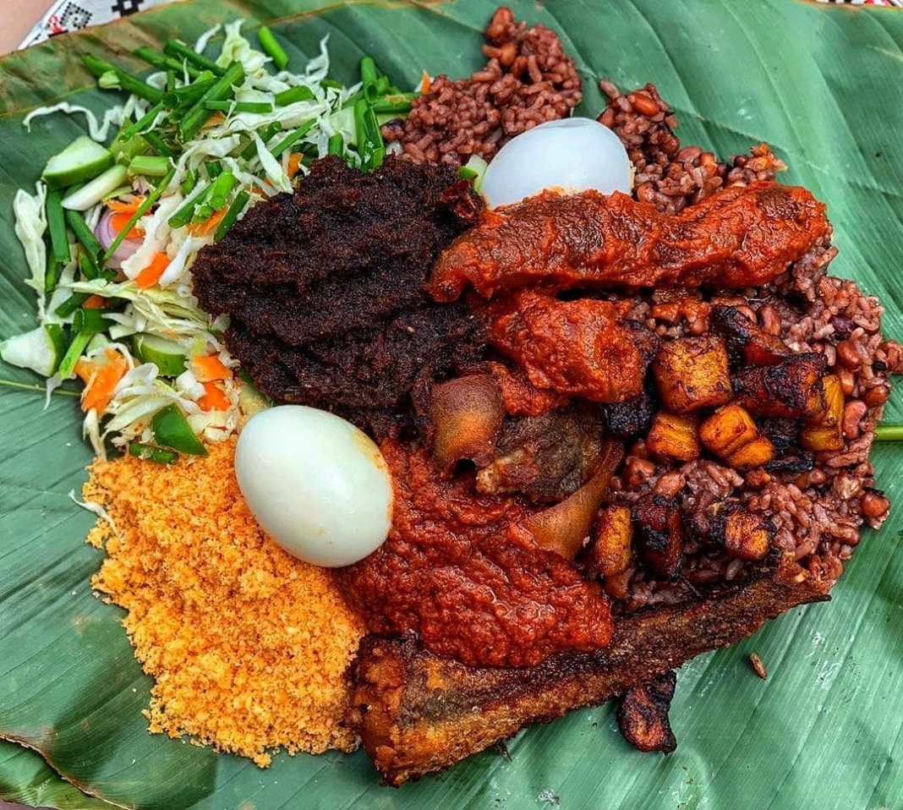

Waakye

Ingredients
- Rice
- Black-eyed peas
- Red beans
- Millet leaves (optional)
- Garlic, ginger, onions, scotch pepper
- Bay leaves
- Thyme
- Salt
Steps
Steps to Prepare Waakye
- Rinse the rice and beans several times with clean water to remove any dirt or debris.
- Soak the rice and beans in water for about 30 minutes.
- Drain the water and rinse the rice and beans again.
- Add the rice and beans to a pot and add enough water to cover them by about an inch.
- Add salt, sliced onions, and spices to the pot and stir well.
- Cook the rice and beans over medium heat until they are tender and all the water has been absorbed. This should take about 45-50 minutes.
- While the rice and beans are cooking, prepare the stew and other accompaniments.
- Once the rice and beans are cooked, fluff them with a fork and serve with the stew, spaghetti, fried plantains, and other accompaniments.